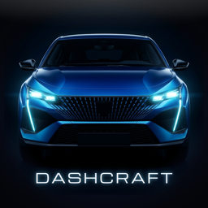

DashCraft
Car widgets & dashboard for your CarPlay screen
DashCraft puts five customisable “Car Slot” widgets on your CarPlay screen. You design what each slot shows on your iPhone: service due, fuel economy, road tax and insurance renewals, Touch ’n Go balance, prayer times, weather and haze, parking, photos, music, live OBD2 values or your own designs. The car screen updates by itself.
Add the widgets to CarPlay
- You need iOS 26 or later and a car with CarPlay.
- On your iPhone open Settings → General → CarPlay, choose your car, then Widgets.
- Add the Car Slot 1 to Car Slot 5 widgets from DashCraft (up to 5 fit in one stack).
- In the app, open Slots and tap a slot to choose what it shows. Use Flash all slots to see which slot is where.
Common questions
- Nothing changes on the car screen. CarPlay can take a moment to redraw. Settings → Reload all widgets, or reconnect the phone.
- No data yet? Turn on Settings → Sample data to see every widget filled with a made-up history. Your own data comes back when you turn it off.
- Live OBD2 values need an optional Bluetooth LE OBD2 adapter (ELM327 type).
- Prayer times, Touch ’n Go and renewals are made for Malaysia.
- Backups: Settings → Backup exports everything to one file you keep.
Contact
Questions, problems or ideas: open an issue at GitHub. Please say which iPhone, iOS version and car you use.